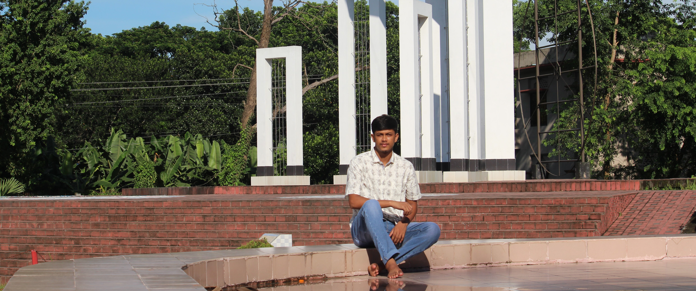
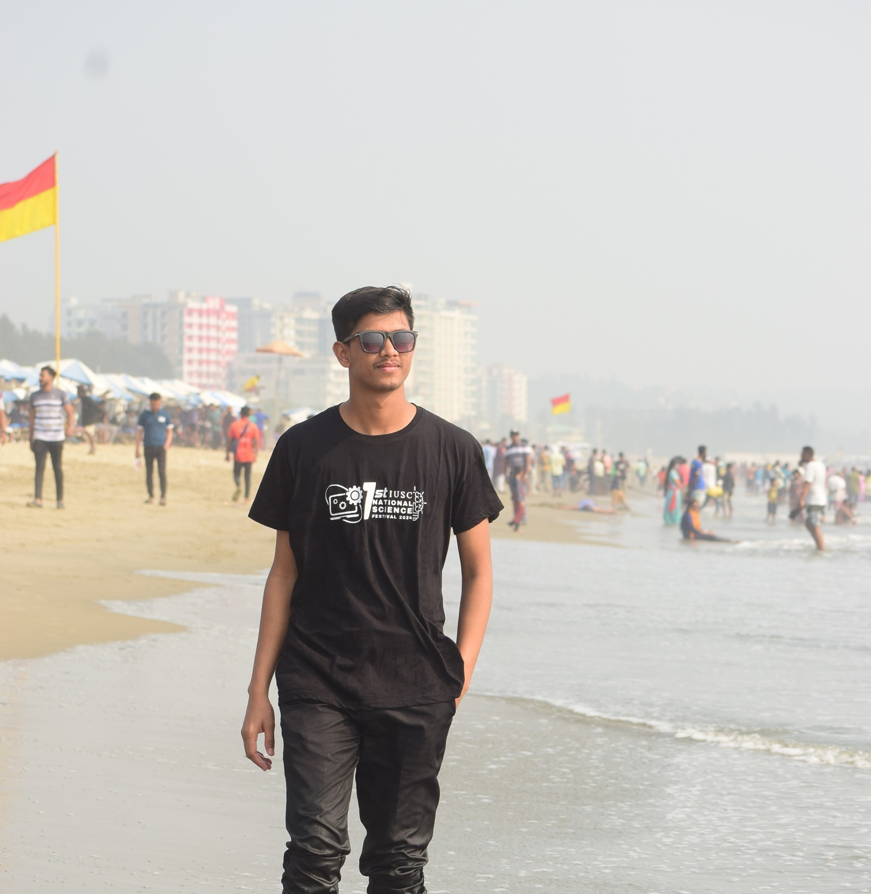
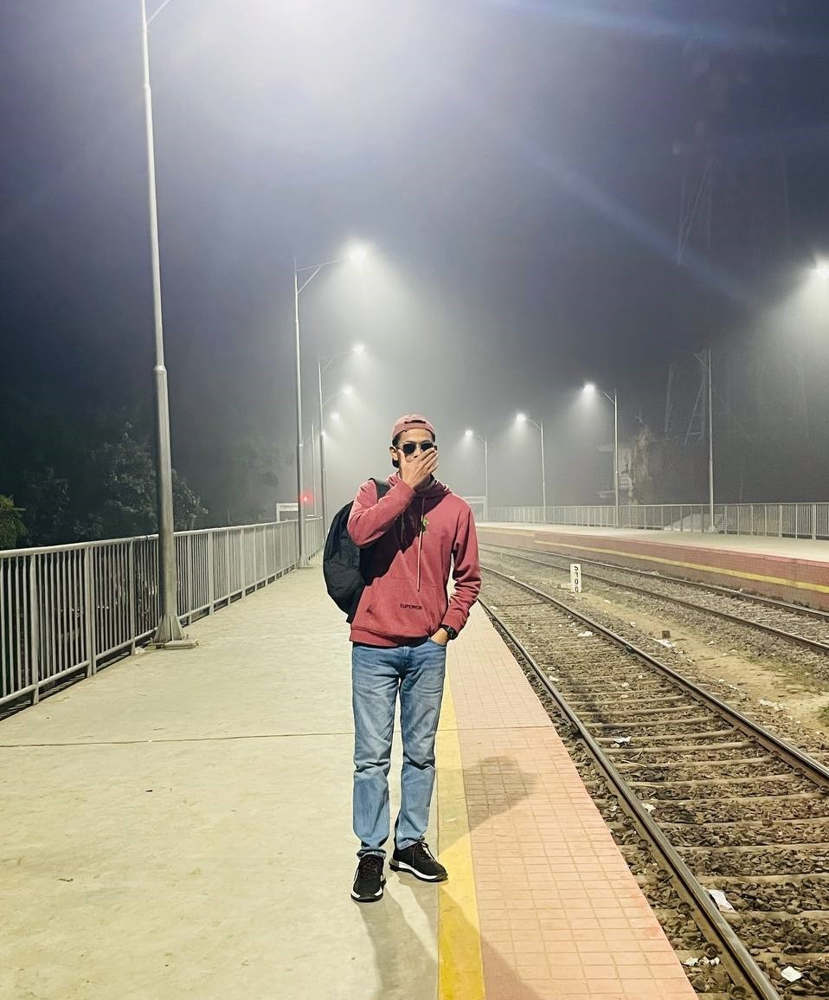

ATIK SHAHRIAR JISAN
. Islamic University · Kushtia, 7003 · 01627105451 ·
Email Me
I'm an engineering student with a deep interest in Machine Learning and the dynamic world of tech startups. My journey is driven by a passion for solving real-world problems through innovation and transforming bold ideas into meaningful, scalable solutions. I thrive at the intersection of technology and creativity, constantly learning and building toward a future shaped by intelligent systems.



